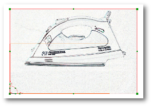

将现有光栅图像重新定位到 XC-YC 平面
-
打开 des7_raster_1。
现有的光栅图像导入到这个部件文件中时，使用了错误的方位，为了需求，熨斗图像的正确位置应当处于下图的空白矩形框内。

-
点击可视化形状工具条上的光栅图像。
-
在操作组中，点击选择新光栅图像。
-
选择图形窗口中的图像。
您也可以右击光栅图像并选择编辑参数而不用打开对话框。
-
从操作组的下拉菜单中，选中 XC-YC。
图像被重新定位到当前 XC-YC 平面中。
